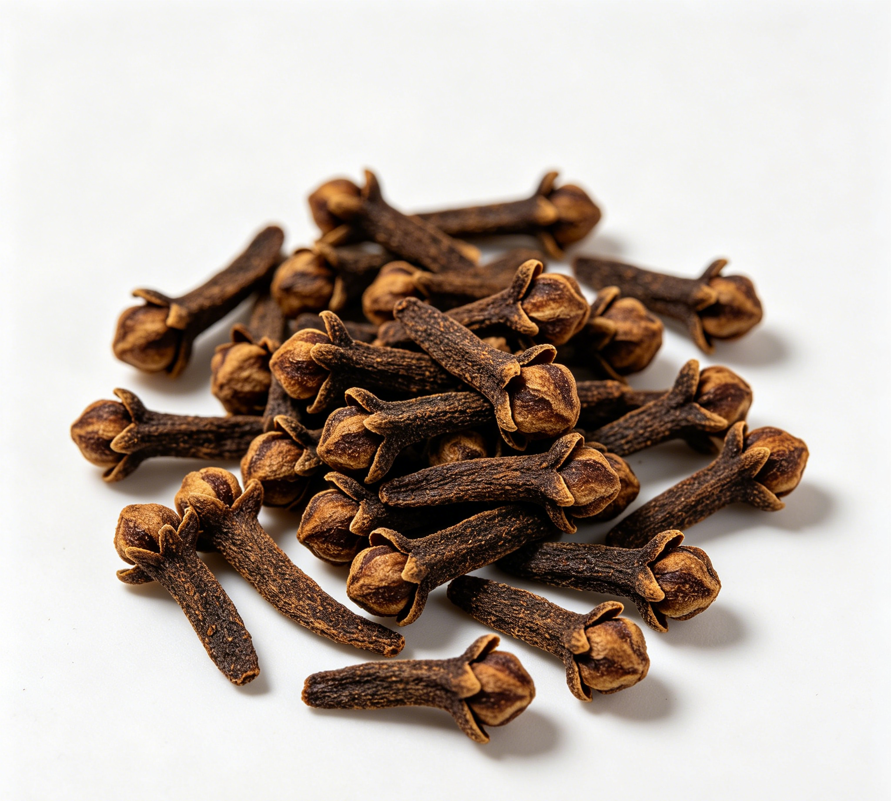

📋 基本信息
中文名丁香
拉丁名Syzygium aromaticum (L.) Merr. et Perry
英文名Clove
产地主产于：桑给巴尔、马达加斯加、斯里兰卡、印度尼西亚，我国广东、 海南也产；茜草科滇丁香属
性状本品略呈研棒状，长1～2cm。花冠圆球形，直 径0.3～0.5cm，花瓣4，复瓦状抱合，棕褐色或褐黄色，花瓣内为雄蕊和花柱，搓碎后可见众多黄色细粒状的花药。萼筒圆柱状，略扁，有的稍弯曲，长0.7～1. 4cm，直径0.3～ 0.6cm，红棕色或棕褐色，上部有4枚三角状的萼片，十字状分开。质坚实，富油性。气芳香浓烈，味辛辣、有麻舌感。
用法用量1～3g，内服或研末外敷。
贮藏置阴凉干燥处。
☯ 传统属性
四气温
五味辛
归经脾、胃、肺、肾经
功能主治温中降逆，补肾助阳。用于脾胃虚寒，呃逆呕吐，食少吐泻，心腹冷痛，肾虚阳痿。
禁忌症不宜与郁金同用。
毒性丁香的副作用：
(一)传统文献
《本草纲目》：无毒。
(二)毒理试验
LD50：
腹腔注射其煎剂的LD50为l.8g／kg。丁香油小鼠灌服的LD50为1.6g／kg。丁香酚小鼠口服的LD50为3g／kg，大鼠的为2.68g／kg。
毒性反应：
小鼠灌服其水提物l20g(生药)／kg，不引起死亡。中毒症状为呼吸抑制，后肢无力，翻正反射消失。给犬口服丁香油2g／kg可发生呕吐，口服5g／kg可发生呕吐而死亡。丁香酚有醌甲基化合物和苯氧自由基，是其在肝细胞中的中间代谢产物。此二物与细胞蛋白共价键结合而产生细胞毒作用。
病理检查：
口服丁香油死亡犬，镜检肝肾有瘀血、浊肿，部分肝细胞坏死，心肌浊肿。说明煎剂的毒性很小。丁香油有一定的毒性反应。
(三)临床观察
无毒。在常规剂量内水煎服没有不适反应。长期水煎服也没有明显副作用。 曾有报道丁香油、丁香酚局部使用，偶然有个别人发生过敏反应。
适宜体质阳虚质、血瘀质、气郁质
适宜证型阳虚证、肾阳虚证、脾胃虚寒证、血瘀证
🔬 现代研究
主要成分花蕾含挥发油即丁香油。油中主要含有丁香油酚(Eugenol)、乙酰丁香油酚、B-石竹烯(B一Caryophyllene)，以及甲基正戊基酮、水杨酸甲酯、葎草烯(Humuleno)、苯甲醛、苄醇、间甲氧基苯甲醛、乙酸苄酯、胡椒酚(Chavicol)、a一衣兰烯(ａ一Ylangene)等。也有野生品种中不含丁香油酚(平常丁香油中含64-85%)，而含丁香酮(Eugenone)和番樱桃素(Eugenin)。花中还含三萜化合物如齐墩果酸(Oleanolicacid、黄酮和对氧萘酮类鼠李素(Rham-netin)、山奈酚(Kaempferol)、番樱桃素、番樱桃素亭(Eugenitin)、异番樱桃素亭(Isoeugenitin)及其去甲基化合物异番樱桃酚(IsoeugenitoI)
药理作用1.抗菌作用 含有1%浓度的丁香的乙醚浸出液，水浸液或含8%浓度的丁香煎剂的沙伯氏培养基，对许兰氏黄癣菌、白色念珠菌等多种致病性真菌均有抑制作用。较高浓度时对新型隐球菌也有抑制作用。醇浸出液与醚浸出液相似，但水浸液较差。丁香油及丁香油酚在1：8000-1:16000时，对致病性真菌即有抑制作用。煎剂1：20-1：640浓度时，对葡萄球菌、链球菌及白喉、变形、绿脓、大肠、痢疾、伤寒等杆菌均有抑制作用，丁香油和丁香油酚在1：2000-1：8000浓度时，对金黄色葡萄球菌及肺炎、痢疾（志贺氏）、大肠、变形、结核等杆菌均有抑菌作用。丁香对流感病毒PR8株也有抑制作用（体外试验）。100%乙醇浸液及1：400丁得油稀释液用平板小杯法对鼠疫杆菌、霍乱弧菌、炭疽杆菌、伤寒杆菌、白喉杆菌、变形杆菌、大肠杆菌、枯草杆菌及金黄色葡萄球菌等抑制作用；丁香油及丁香酚在1:16000-1：64000浓度时对布氏杆菌即有抑制作用，1：8000浓度对鸟型结核杆菌也有抑制作用。
2.抗真菌作用：乙醇浸剂1:100、丁香油及丁香酚1：8000-1:16000对星形奴卡菌、许兰黄癣菌、石膏样小孢子菌及腹股沟表皮癣菌等有抑制作用。
3.驱虫作用：水或醇提取液在体外对猪蛔虫有麻痹或杀死作用，感染蛔虫的狗口服丁香油0.5-1.Og/kg，有驱虫作用，但一次服用并不能将蛔虫全部驱除。丁香油较煎剂为优。50%煎剂及乙醇浸剂在体外对猪蛔虫有杀死作用；丁香油效力更大，其1%的混悬液即有杀死部分蛔虫的作用，0.1-0.5g/kg灌胃对狗蛔虫有驱除作用。
4.健胃作用：丁香为芳香健胃剂，可缓解腹部气胀、增强消化能力、减轻恶心呕吐。5%丁香油酚乳剂可使胃粘液分泌显着增加，而酸度则不增强；丁香水浸液灌胃，可使巴甫洛夫小胃狗的胃酸排出量和胃蛋白酶活力显着增加。丁香油之作用稍差，连续应用，可使粘液耗竭，而仅分泌非粘液性的渗出物；36小时后方能部分恢复反应（分泌粘液），完全恢复，需数月以后。丁香浸出液对胃液分泌的影响取丁香10g，用150ml蒸馏水浸泡4小时左右，在85-90℃下加热30分钟,煮沸3分钟左右，用双层纱布过滤后用蒸馏水将滤液调至含生药10%的浸出液，为了消除酸度本身对胃液分泌的影响，用NaOH溶液调浸出液至pH=6.8-7.2之间。实验用4只具有三通巴甫洛夫小胃的狗进行，实验在手术后4周开始。狗在实验前禁食16小时以上，但不限饮水。实验时先移去瘘管的管塞，待胃内积存的分泌物流出后将管芯插入直管内。在实验的全过程中主胃和小胃均与外界相通。如果主胃胃液的pH在5以上时，待小胃的胃液流出体外后即开始实验。结果丁香浸出液在20次实验中，12次均有明显升高。在灌注后3小时内，小胃的总酸排出量达0.350±0·044mg当量，与对照比较P＜0.01。在对胃蛋白酶活力影响实验中，灌注丁香浸出液后hl胃蛋白酶的活力开始升高，在灌注后3小时内，每30分钟样品中胃蛋白酶的平均活力达50·5±1.3单位，与对照比较P＜0.05。如在实验前iv硫酸阿托品0.1mg则可使丁香浸出液刺激胃酸分泌的作用受到明显抑制，总酸排出量增多的现象不再出现，可见在丁香浸出液刺激胃酸分泌的机制中有胆碱能机制参与。对4种胃溃疡的影响①对水浸应激性溃疡的影响小鼠，体重22.4±2.3g（X±SD），雌雄各半，随机分每组10只，禁食1夜,ig受试药物后，装入特制的应激盒，浸入20-30℃水中，水位达小鼠颈部，8小时后处死取胃，镜检计算出血点数，计算出溃疡抑制率（%）。结果阳性对照甲氰脒胍200mg/kg；丁香水提物10g/kg和20g/kg均可明显抑制小鼠水浸应激溃疡，②对幽门结扎性溃疡的影响大鼠体重145±16g，雌雄各半，随机分每组10只，禁食24小时后，乙醚麻醉下，按Shay法结扎幽门，ig受试药物，缝合腹壁后19小时，处死大鼠，取胃，镜检前胃部溃疡，分级计算指数及溃疡抑制率（%），结果药物无明显影响。③对消炎痛加乙醇诱发溃疡的影响小鼠体重24.7±1.5g，雌雄各半，随机分每组10只，ig受试药物0.5小时后，ip消炎痛10mg/kg，l小时后ig50%乙醇0.2ml/只，再过l小时处死取胃，镜检条状损害,测量总长度（mm）为溃疡指数，计算溃疡抑制率。结果呋喃唑酮100mg/kg和丁香石油醚提物0.3ml/kg可明显抑制消炎痛加乙醇诱发的溃疡。④对0.6mol/L盐酸所致胃粘膜损伤的影响大鼠体重176±21g。雌雄各半，随机分每组10只，禁食24小时，ig受试药物0.5小时后，ig0.6mol/l盐酸lml/只，再过l小时后处死取胃，镜检条状损害，测量其长度（mm），计算溃疡抑制率（%）。结果甲氰脒胍100mg/kg，丁香水提物及石油醚提物均可明显抑制0.6mol/L盐酸所致胃粘膜损伤。
5.止痛作用：从小鼠热板试验和抗扭体反应试验结果表明，丁香石油醚提物（0.15ml/kg和0.3ml/kg）和丁香水提物（10g/kg和20g/kg）均可显着延长小鼠痛觉反应潜伏期和显着减少小鼠因冰醋酸0.1ml/10g刺激引起的扭体，反应次数。牙痛丁香油（少量滴入）可消毒龋齿腔，破坏其神经，从而减轻牙痛。
6.丁香水提物和石油醚提取物对小鼠耐缺氧和受寒等的影响：丁香用石油醚（30-60度）提取2次，每次冷浸3d，回收石油醚得黄褐色油状物，用阿拉伯胶分别配成1.5和8%（v/v）乳状液，药渣中加开水煮沸0.5h，共2次，并浓缩成1ml含生药1g浓度的丁香水提物。耐缺氧：对小鼠常压密闭缺氧耐受力的影响取小鼠30只（雌雄不分），体重22.0±2·5g，分3组，分别ig丁香石油醚提取物和3%阿拉伯胶溶液后l小时，单个放入145ml的广口瓶内，瓶内盛有适量的钠石灰，瓶口用连接测氧仪的橡皮塞密闭，测定瓶内氧含量从21%降至15、10和7%所需的时间（即耗氧速度）、存活时间及死亡时瓶内残存的氧含量。实验数据用t检验统计处理。另取雌性小鼠5O只，体重21.4±2.4g，分为5组，分另ig丁香水提物及自来水后l小时，其中两组分别ip普萘洛尔和生理盐水0.5h后，单个放入容量为120ml的广口瓶内，按上法测定，表明普萘洛尔对3项指标都有明显影响，丁香水提物能延长小鼠存活时间和降低死亡时瓶内氧残存量，说明丁香水提物不是通过减慢耗氧速度，而是通过提高小鼠在低氧条件下的氧利用能力，增强小鼠常压密闭下抗缺氧的能力。
张口动作：对断头小鼠张口动作持续时间的影响取20g左右小鼠，每组30只，分别ig丁香水提物，石油醚提取物和对照溶液后1小时，自颈部一刀剪下小鼠脑袋，并立即用秒表记录断头小鼠的张口动作持续时间，结果只有丁香水提物10和20g/kg组显着延长张口动作持续时间，10g组P＜0.01，20g组p＜0.05。
中毒：对氰化钾中毒和对亚硝酸钠中毒小鼠存活时间的影响取体重20.7±1.7g小鼠，性别不分，每组12-16只，分别ig丁香水或石油醚提取物和对照液后l小时，其中一组ip普萘洛尔20分钟后再iVkCN4mg/kg，并立即记录小鼠存活时间，结果见表3。丁香水提物20g/kg组和普萘洛尔组能延长KCN中毒小鼠的存活时间。又取雄性小鼠，体重22.6±2.0g，每组10只，分另ig丁香水提物，石油醚提取物和对照液后l小时，ipNaNO2800mg/kg，并立即记录存活时间。丁香石油醚提取物0·15和0.30ml/kg组能显着延长NaNO2中毒小鼠存活时间。
耐寒：对受寒小鼠存活时间的影响取雌性小鼠，体重19.7±0.8g，每组12只，禁食禁水24小时，分别ig丁香石油醚提物、水提物和对照液后0.5小时，分装在铁皮小盒内，每盒6只，并将铁皮盒放入-18--20℃冰箱内，每小时开启冰箱，取出死鼠，活鼠合并成每盒6只左右，观察至小鼠全部死亡为止，结果丁香石油醚提物0.30ml/kg组明显缩短受寒小鼠存活时间，可能这一剂量能明显抑制自发活动所致。
7.丁香水提物和石油醚提物对动物胆汁分泌、腹泻和肝损伤的影响7.1对麻醉大鼠胆汁分泌的影响 大鼠体重174±17g，雌雄各半，随机分每组8只，乌拉坦麻醉后，按文献方法［药学杂志（日）1987；107（12）：990］行胆管插管术，术后平衡30分钟，十二指肠给药，收集给药前30分钟及给药后4小时内每30分钟的胆汁流量，进行比较，得出流出率（药后流量/药前流量），与对照组相应时相比t检验。结果丁香石油醚提物可明显促进麻醉大鼠胆汁分泌，作用可维持2小时。
7.2对蓖麻油，番泻叶等药物引起腹泻的影响 小鼠体重19.8±1.5g，雌雄各半，随机分每组12只。实验时禁水、食，ig受试药物后0.5，ig蓖麻油0.15ml/只，单个放入底部有直径约15cm垫纸的小桶内，每1小时换垫纸并计算腹泻次数，观察6小时。结果丁香石油醚提物0.3ml/kg，可显着抑制蓖麻油引起的小鼠腹泻。又取小鼠体重20.4±1.7g，雌雄各半，随机分每10只，ig受试药物后0.5小时，ig番泻叶0.4g/只番泻叶（Cassiaangustifolia）20g加水250ml煮沸5分钟，纱布过滤后水浴浓缩成每1ml含1g生药的溶液，以后操作方法同蓖麻油腹泻实验，观察8小时。结果丁香水提物20g/kg可明显抑制番泻叶引起的腹泻。
7.3对四氯化碳诱发急性肝损伤大鼠SGPT，SGOT的影响 大鼠体重221±25g，雌雄各半，随机分为每组9只。受试药物，每日1次，连续5日，末次给药后1小时，igCCl40.3ml/kg,16小时后麻醉状态下颈动脉取血，赖氏法测SGPT，金氏法测SGOT，t测验进行数据处理。结果丁香石油醚提物及水提物对CCl4诱发急性肝炎大鼠的SGPT、SGOT显着升高均未产生明显影响。
8.丁香提取物对代谢的影响 丁香热水提取物及水溶性组份具有代谢活化的抑制作用及代谢活化Trp-p-2的失活作用的双重作用。醚可溶组份、丁香酚、乙酰丁香酚、异丁香酚可抑制代谢活化，但未见对代谢活化Trp-p-2的失活作用。除去鞣质后的水可溶组份对代谢活化不呈抑制作用，对代谢活化Trp-p-2的失活作用亦小。这些试样不具抗诱变性。根据上述情况提示，丁香热水提取物对诱变的抑制效果可能是由于鞣质、丁香酚等对代谢活化的抑制作用及鞣质对代谢活化Trp-p-2的失活作用所引起。丁香的水、盐水以及乙醇提取物中含有一种含酚和糖醛酸的复杂糖甙，具有抑制脑乙酰胆碱脂酶的作用。
9.平喘作用 B-丁香烯在丁香挥发油中含量约5.4%，亦是菊科植物艾叶油中的平喘有效成分之一。药理实验，发现它对离体气管平滑肌几乎没有松弛作用，但po疗效与艾叶油相似。药理筛选对豚鼠离体平滑肌有收缩作用。代谢物III为黄色粘稠油状物，是具有活性的代谢物，根据GC-MS、IR、1HMR和半合成实验证实该代谢物为B-丁香烯醇。药理实验表明，B-丁香烯在体内的代谢产物之一B-丁香烯醇，具有较强的豚鼠离体气道平滑肌松弛作用，PD2＝4.36（n=6）；在用于组胺和乙酰胆碱诱发的豚鼠哮喘，以0·2g/kgig能使全部动物（n=8）不发生喘息，其作用持续时间长于6h。B-丁香烯醇，小鼠igLD50>10.8g/kg，表明毒性极小。
食疗功效丁香性温芳香，长于温中散寒、降逆止呕，为治胃寒呕吐、呃逆之要药。 适用于胃寒呕吐、呃逆，及脾胃虚寒所致之食少吐泻，亦治妊娠恶阻。 丁香入脾、胃经，温中散寒止痛，可用治胃寒脘腹冷痛。 入肾经，有温肾助阳起痿之功，可以治疗肾虚之阳痿、宫冷
食养禁忌
🏭 产品形态与潜在功能
推荐形态
粉末丸剂干果
潜在功能